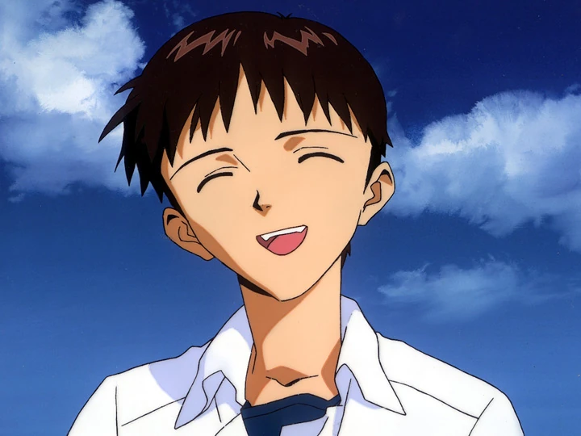

|  |
Протагонист. 14 лет. Третье Дитя, пилот Евангелиона-01. Ученик класса 2-А школы 707 Токио-3. Сын Гэндо и Юи Икари.
Стеснительный и замкнутый подросток, меланхолик, интроверт. После смерти матери был брошен отцом. Вместо него о Синдзи заботился учитель. В результате Синдзи вырос в замкнутого отшельника, выбирающего побег от трудных ситуаций.
Вызван в Токио-3 своим отцом в самом начале сериала. Немедленно приступает к пилотированию Евангелиона. Синдзи трудно сближается с людьми ― он много времени проводит в одиночестве, размышляя о своей жизни. Основу сериала составляют взаимоотношения между Синдзи Икари и другими персонажами.
Тодзи Судзухара и Кэнскэ Аида становятся его друзьями, он проникается чем-то наподобие родственных отношений с Рэй, и оказывается втянутым в сбивчивые отношения с Аской. К концу сериала из-за череды трагических событий становится более одиноким и отчужденным от людей, и потому с большим воодушевлением вступает в дружеские отношения с Каору.
Приметы: Хрупкий мальчик без каких-либо особых примет. Тёмные волосы, тёмно-синие глаза (серые в манге и «Death&Rebirth»). Часто слушает музыку через архаичный плеер-магнитофон. |